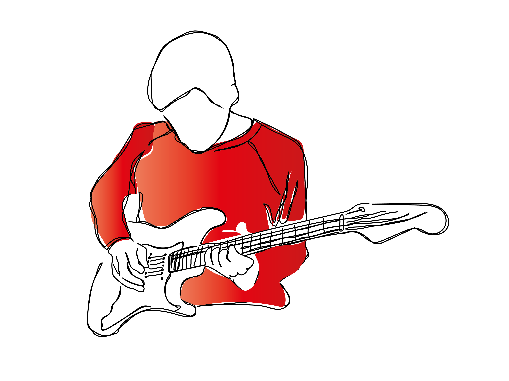
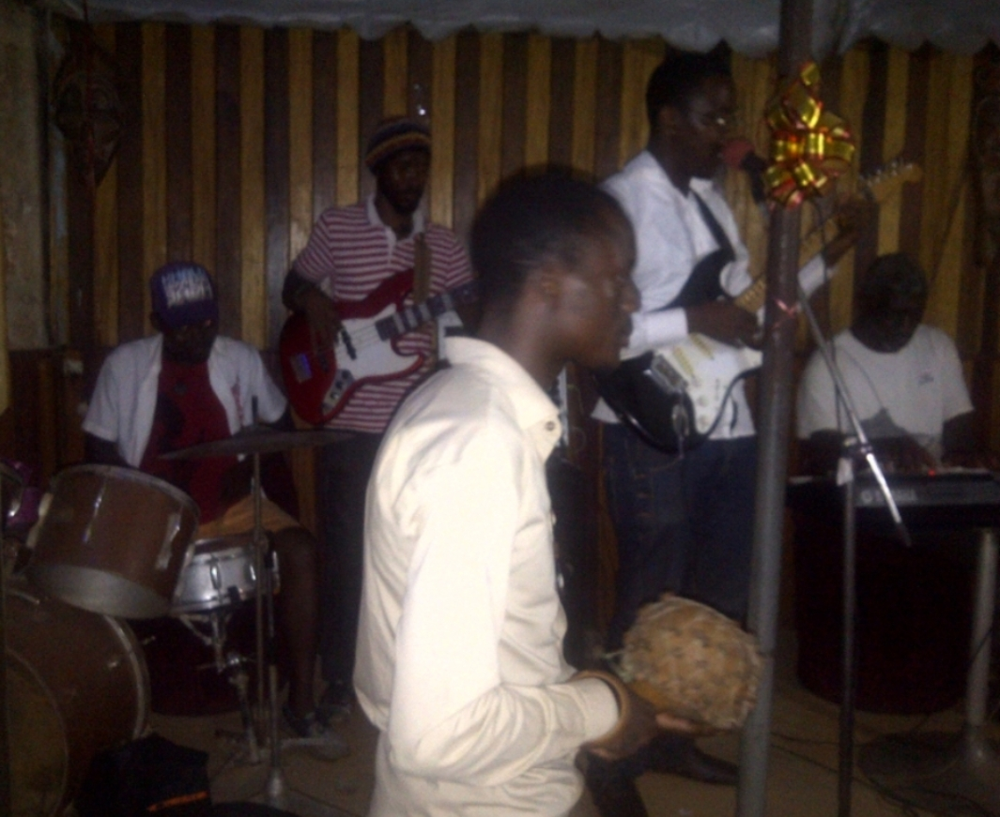
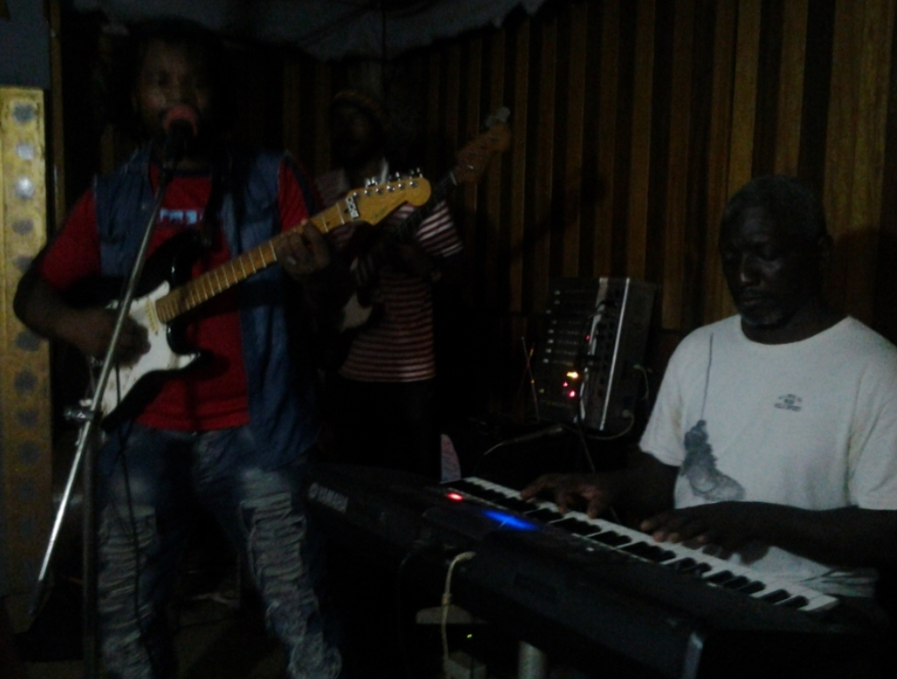

Home Page About us FAQs Contact
MUSIC LESSONS
- Music Theory
- Practical Live Music Network
. Accademic Ressources and fundamentals (Jazz, Bebop, African Rythms, Gospel etc.)
. Step by step tutorials fully detailed and explained
. Chords progressions, Scales, Substitutions, fingerings, Runs, and more advanced concepts
. Jazz Licks and Voicings with Improvisation, Reharmonisation and Performance Masterclasses
. Apply your musical knowledge to real-life situations
. Connect with other artits and professional musicians
. Get full references from ACA networks for career prospect
 Contact UsSinging and Song Writing Workshops
The association's Choir
ACA is launching choir sessions for vocalists wishing to bring to singing skills to the next level. Get in touch with ACA Yde branch for more details.
Learn a musical instrument of your choice
The association can help beginners and more experienced learners to gain full confidence on any instrument of their preference (Piano, guitars, saxophones, drums, vocals) while devoloping creativity, courage and high self-esteem.

CONTACT:
Go to our Contact Page, to get in touch with the ANGELS CREATIVE ARTS team for more information or for a collaboration.